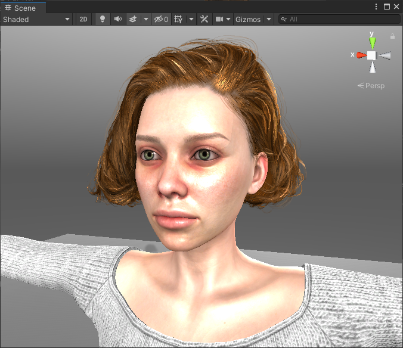
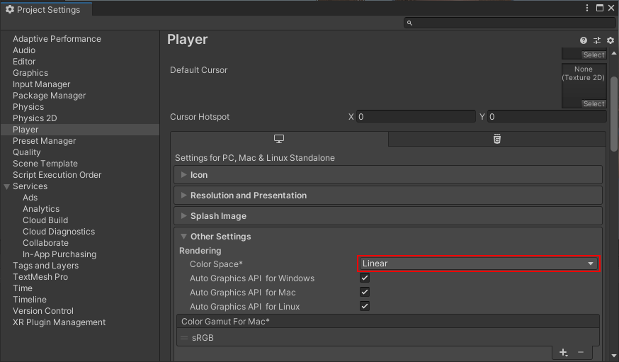
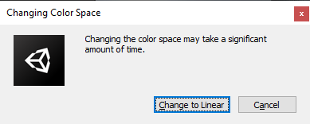
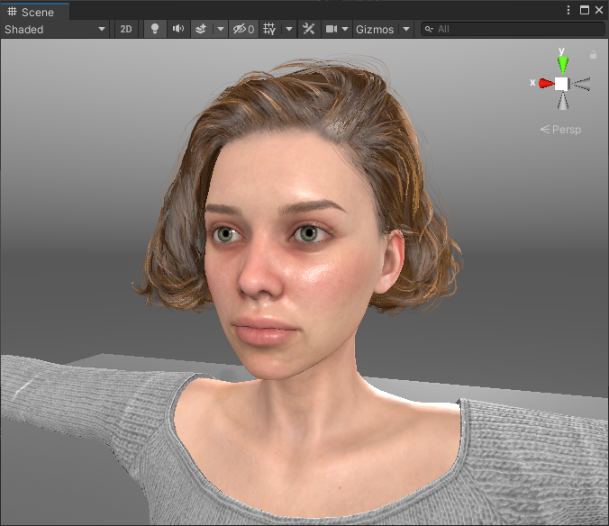
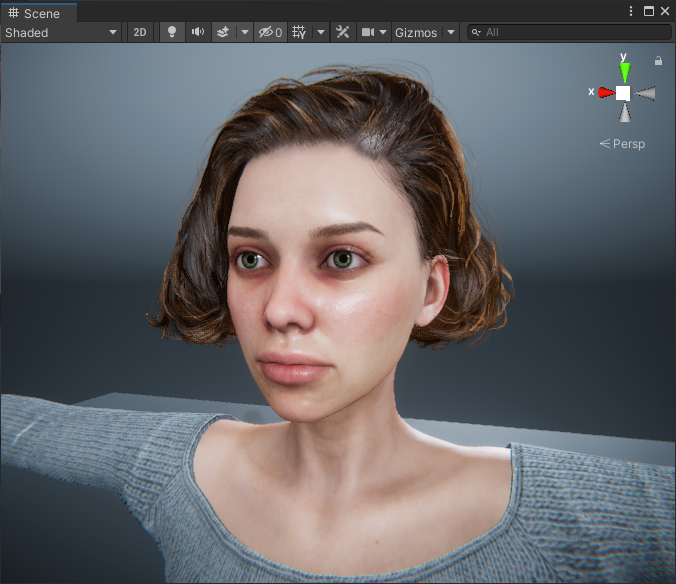
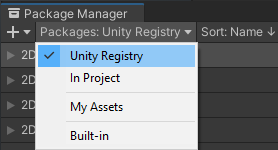

About
Welcome to the Unity import and auto setup tool for Character Creator and iClone from Reallusion.

This is a fully featured tool to take exports from Character Creator/iClone and set them up in Unity with complete visual fidelity.
The tool can produce characters of the highest visual quality using custom Shader graph shaders. Additionally, more performance focussed characters can be produced using simpler shaders with a minimal loss of visual quality.
How it works
Character exports from Character Creator and iClone can be dragged into Unity, the import tool can then be opened and the character processed with a single click.
For full details of the workflow, see the Usage section of this documentation.
Obtaining the Tool
The tool is currently available for each of the 3 render pipelines in Unity, HDRP (High Definition Render Pipeline), URP (Universal Render Pipeline) and 3D (the default built in render pipeline).
The tool can be installed using Unity’s internal package manager from either the Main branch of the appropriate git repository, or via download of the .zip of the latest release. The links to the repository and latest releases are shown below.
Pipeline |
Repository |
Latest Release |
|---|---|---|
This process is discussed in detail in the Installation section of this documentation.
Removal
Unity’s internal package manager allows the simple and safe removal of the tool.
Updating
Simply remove the existing tool as above and install the latest version.
Considerations for the URP and 3D Render Pipeline
Image Space
If you opt to use the built in render pipeline (i.e. the 3D render pipeline) then you may initially encounter some graphical anomalies which adversely affect the presentation of ‘Character Creator’ characters. If your characters appear excessively bleached out and shiny (as shown below - where the Color Space is set to Gamma) then your unity project is set to the wrong ‘Color Space’.
{kind=link}
The above image is show with the project using the default ‘Color Space’ setting of ‘Gamma’. This can be corrected by using the Edit -> Project Settings menu and in the window that appears, navigate to the Player section. In the Other Settings foldout, the Color Space setting can be changed (below).
Change this from ‘Gamma’ to ‘Linear’ (as depicted above) and accept the following prompt.
Afterwards, the character will be presented more appropriately (shown below - where the Color Space is set to Linear).
{kind=link}
URP and HDRP projects are set to ‘Linear Color Space’ by default and as such don’t encounter this issue.
Post-Processing
The image quality can also be further enhanced for both the built in render pipeline (3D) and the universal render pipeline (URP) by using the Post Processing package in the Unity Registry. This will use automatically use a custom pre-configured post processing stack to give the result shown below.
{kind=link}
To install the post processing package, go to the package manager window and use the ‘Packages’ dropdown to change the list show to ‘Unity Registry’.
Scroll down the list to find ‘Post Processing’. Select the item in the list and click install.
After installation the post processing stack will be added to the main camera and the custom settings automatically applied.